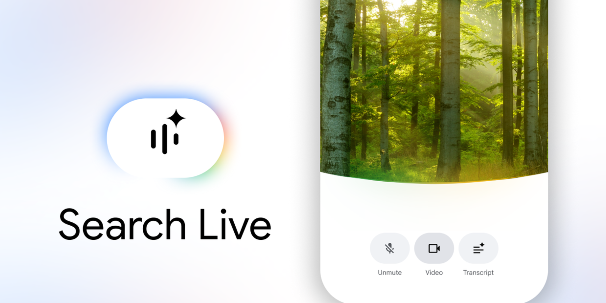
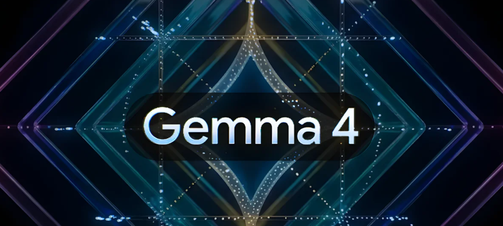
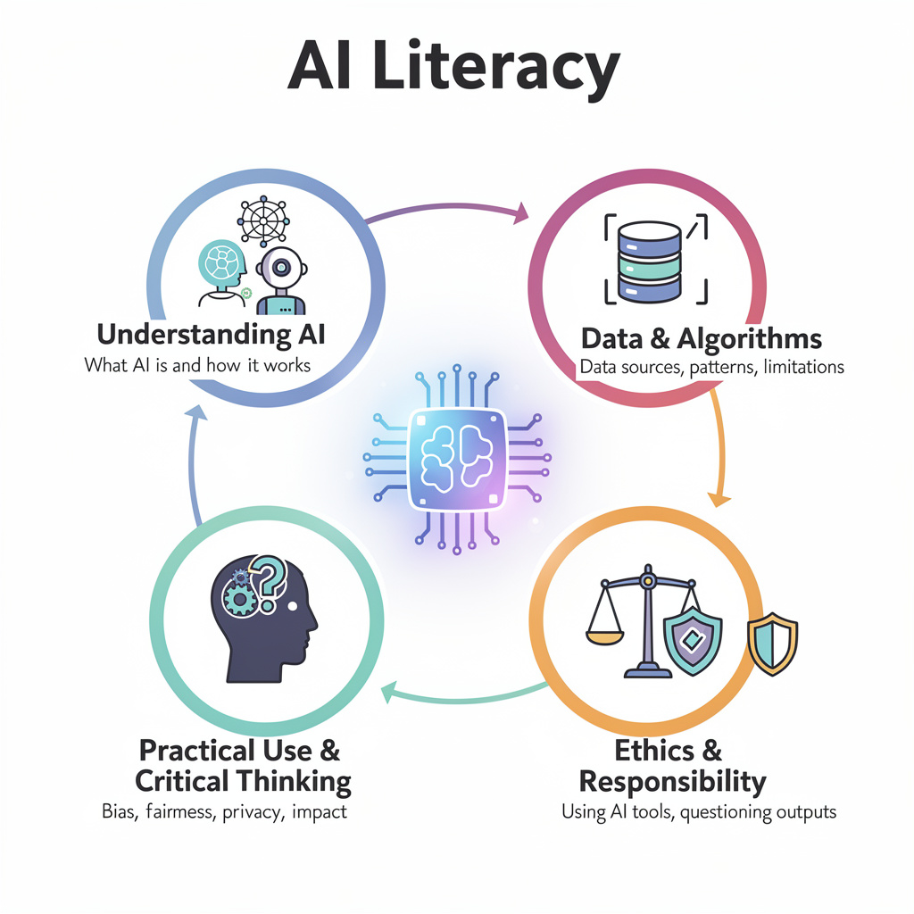
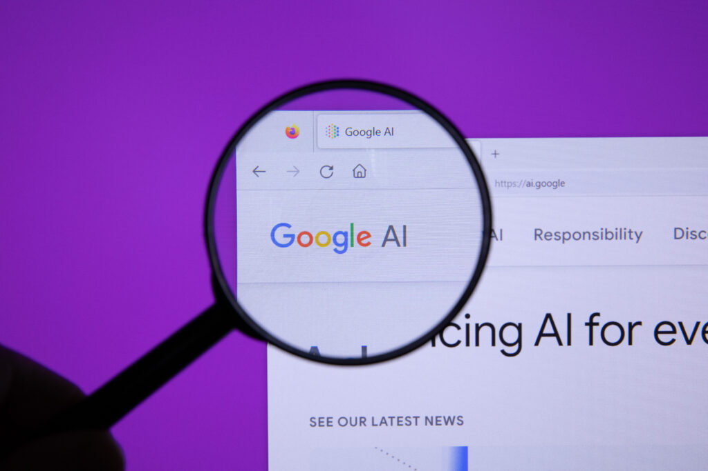

Artificial Insights
In This Issue

Search Live is expanding globally

Google is expanding Search Live globally, which means spoken, back-and-forth search is becoming a normal part of the search experience. The practical angle is pretty straightforward. You can ask follow-up questions while driving, walking, or doing literally anything else you are multitasking through. I love this feature, and use it all the time while driving from campus to campus (I had a preview). For some reason I only remember what I actually want to search... when I'm already driving.
Google launched Gemma 4 and the local AI conversation just changed

Google launched Gemma 4, a family of open-weight models that bring LLM models to your computer, where ALL data can be kept off the internet. This is huge for anyone that wants to use AI for work with FERPA or HIPAA data. Any concerns that we had related to privacy, can now be a thing of the past. I'm happy to show anyone how to use these, so let me know if you'd like to try!
The legal and policy pressure around AI keeps rising
This week brought a privacy lawsuit against Perplexity for sharing data they claimed would not be shared, a lawsuit victory against Meta and Google alleging LLMs caused serious mental health problems, and a push from lawmakers for an AI data center moratorium. None of these cases are simple, and none of them are finished — but taken together, they point to something that matters more than any single verdict. AI is getting more embedded in everyday systems at the same time that regulators, judges, and plaintiffs are getting less patient with the "move fast and let society figure it out later" plan. The practical question for anyone using or recommending AI tools at work is not whether this legal pressure exists — it clearly does — but whether the tools and workflows you are building can hold up to it.

🛠️ Granola
The News: Granola is a bot-free AI meeting notepad that sits on your desktop, captures system audio, and turns meetings into structured notes without the usual “this call is being invaded by a transcription goblin” moment. I love the way that Granola structures the notes exactly the same for every meeting based on the template you create.
My Take: This is exactly the kind of tool that saves me time. It targets a real pain point for me - integrating meetings from in person meetings with all of my notes from meetings that happen via teams.
🛠️ Microsoft 365 Connectors
The News: Claude rolled out Microsoft 365 connectors for everyone, which means Outlook, OneDrive, and SharePoint can be pulled directly into Claude’s chat. ChatGPT is read-only for the moment, but Copilot lets us read and write—just with a lot of confirmations.
My Take: I'm kind of shocked that Microsoft allowed this access for anyone. However, this matters because now I can edit my documents from within the chat where I'm doing a lot of my research from - Claude. In our Microsoft-heavy environment, this is something that will save time by virtue of not having to confirm everything I want to change like Copilot does. ChatGPT will have this soon.

🔬 The new phase of AI is not “smarter chatbot.” It is embedded autonomy—and we should lean in.

The biggest story in this issue is not any single model, feature, or lawsuit. It is the shift from AI as a chatbot assistant to AI as an embedded operator inside work, search, security, science, and design.
You can see it everywhere in this week’s notes, and in the wider news. Microsoft is pushing automated workflows through Copilot (like our In Action section below) and custom agents. Salesforce is converting Slack from just a messenger clone into something that can join calls, transcribe discussions, summarize outcomes, and log action items directly into Salesforce CRM... and they did it all in a month. Claude’s Microsoft 365 connectors are another step toward AI living inside the tools you already use. Search Live turns search into an ongoing conversation rather than a sequence of queries. Perplexity’s tax-focused Computer narrows AI into a high-friction, high-value task that most of us non-Accountants would rather not do by hand.
That is the real transition. We are moving from “AI helps me think” to “AI handles pieces of the workflow for me,” while remembering that each of us is still responsible for what gets shipped.
It is important to take a pause here. Automation can compound mistakes. A sloppy prompt can turn into a chain of bad outputs. And the honest reality is that most institutions are still working through the basics — which tools to allow, which workflows to document, and how to talk to students about it. Those are not small questions, and getting them right takes real time. The institutions that are moving fastest are not skipping those steps. They are knocking them off the list quickly so they can focus on what comes next: embedded agents, automated coordination, and AI that meets people inside email, calendars, and meetings rather than in a separate chat window. That is where the day-to-day impact lives — and getting there requires the foundation to already be in place.
That is why the agent automation future matters more than the model conversation for day-to-day impact. The next wave of productivity is not “the chatbot sounds 10% smarter.” It is that the AI is wired into calendars, inboxes, CRM, internal search, and institutional process. Admitteldy, there are still exceptions where the model itself is the story - such as the upcoming Mythos model, but for most of us, the way to use AI to help us is where AI runs, not only which model we picked.
Here is how we win at this... move toward agentic workflows with guardrails. First, decide which workflows are safe to automate next, what data must never leave the system, what human review happens before automation acts, and who owns the outcome.

🎓 Colleges are no longer debating whether AI matters. They are deciding how to absorb it.

A Gallup report says 42% of bachelor’s students and 56% of associate students say AI has led them to think about changing their major or field of study (more on this below). That is not a fringe signal. That is mainstream student anxiety colliding with news messaging uncertainty.
At the same time, Inside Higher Ed profiled colleges approaching AI in very different ways: everything from required AI literacy and new AI centers to institution-wide efforts to embed AI literacy across programs.
The lesson is pretty straightforward. The serious schools are not treating AI as a one-off workshop or a faculty panic topic. They are treating it as a literacy, workforce, and curriculum issue, and that is exactly the direction worth moving.
🎓 College students are already rethinking majors and careers because of AI
Gallup reports that 16% of currently enrolled students say they have already changed their major because of AI’s perceived effect on jobs, and around one in seven say preparing for AI and other technological advances was an important reason they enrolled in higher education in the first place. That is a direct signal to colleges and technical programs that we need to make sure students know that we can help them in whatever their chosen program is. Students are not waiting for institutions to decide whether AI matters. They have already decided it does, and they are making real academic and career decisions based on what they are reading and hearing — sources that are often incomplete, contradictory, and almost never designed to help someone think clearly about a 4-year career plan. That gap is not the students' fault. It is an opportunity. When students trust their program to give them a grounded, honest picture of what AI means for their field, they stop reacting to headlines and start building skills. That is exactly the kind of signal our programs can be positioned to provide — if we are deliberate about it.

🎬 Copilot agents are drifting from assistant to background coworker
I have a cool demo for you regarding Copilot agents again. The Microsoft Copilot agent area has improved quite a bit in the last 30 days. The power here is idea of assigning recurring coordination work to an agent, or making one-off applications to help with what you are doing. Think about doing something like watching emails for project updates, scanning channels and folders for weekly status material, creating an app to combine data from teams, e-mail, and notes, or just preparing reviewable e-mail replies.

🎬 Here is the finished app in 22 steps from our one prompt
It's so nice to just quickly create something that will help you in the moment.


Try a voice-first research conversation on your commute

This week’s big theme is embedded AI. Search is becoming conversational, agents are becoming our partners, and the line between tool and coworker keeps getting blurrier. So here is a lightweight experiment that turns your phone into an actual learning partner instead of a slot machine for search queries.
The Prompt:
"Open the Google voice interface OR the Gemini mobile app and say: “I’m trying to understand [topic]. Start with a beginner-friendly overview, then bring up the more controversial items for us to discuss.”
Good topics to try: - data center energy use - drug discovery with AI"
How can AI help me?
- Create a “Researcher Agent” and ask it to investigate a real industry topic. I look for AI news + education each week, and ask it to pull out key points, trends, and citations (to make certain it doesn't hallucinate). https://m365.cloud.microsoft/chat?auth=2&home=1&from=ShellLogo&redirfrom=CsrToSSR
- Draft a “Daily Brief” in Word with 3 sections: “Urgent replies,” “Today’s meetings,” and “Docs to review,” including links to each item. https://m365.cloud.microsoft/chat?auth=2&home=1&from=ShellLogo&redirfrom=CsrToSSR